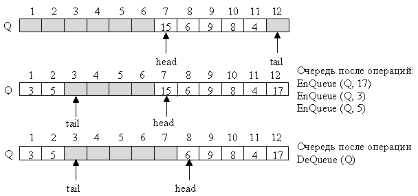
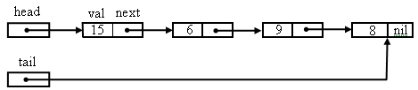
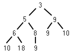
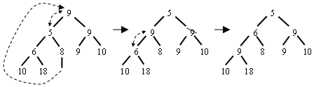
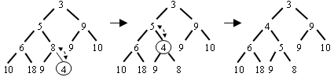
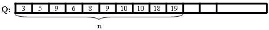

|
|
||||||
|
Очередь на базе односвязной структуры
Очередь - позиционное множество элементов с дисциплиной доступа к элементам FIFO (First Input - First Output ). Основными операциями над очередью являются операция добавления элемента - Enqueue и удаления элемента – Dequeue. Также используется запрос - операция опроса пустоты очереди - Empty. Вычислительная сложность операций Empty, Enqueue и , Dequeue постоянна и имеет нотацию трудоемкости – О(1). У очереди есть голова (head) и хвост (tail). Элемент, добавляемый к очереди, оказывается в её хвосте, а удаляемый элемент находится в голове очереди Также, как и стек очередь можно хранить в массиве или в связной структуре с адресными указателями. Очередь на базе массива Q [ 1 .. n ] иначе называют циклической очередью. Для очереди используются две переменные head[Q] – индекс головы очереди и tail[Q] – индекс свободной ячейки, в которую будет помещен следующий добавляемый элемент. Очередь состоит из элементов Q[head .. tail-1]. Подразумевается, что массив свернут в кольцо: за индексом n следует индекс 1. Такой массив называется циклическим. Если head[Q] = tail[Q], то очередь пуста. Первоначально очередь пуста и head[Q]=tail[Q]=1. Попытка удаления элемента из пустой очереди ведет к ошибке "underflow". Если head[Q] = (tail[Q]+1) mod n, то очередь полностью заполнена, и попытка добавить в неё новый элемент вызовет ошибку переполнения "overflow".
Для обнаружения пустой очереди Q используется запрос Empty:
Empty ( Q )
Операция помещения в очередь имеет вид:
Операция удаления из очереди имеет вид:
Очередь на базе односвязной структурыДругой формой хранения очереди является односвязная структура элементов с адресными указателями. Элементы очереди представляет собою записи node, содержащие поля для значения элемента - val и для указателя на следующую запись в связной структуре - next .  Голова очереди - head [Q] и хвост - tail [Q] являются адресными указателями на первый и последний элементы в связной структуре. Если очередь пуста, эти указатели содержат адрес nil. Операция Empty( ) сводится к сравнению указателя с адресом nil:
Empty ( Q )
Операция Enqueue помещает новый элемент в конец структуры:
Enqueue (Q, x)
Операция Dequeue удаляет элемент из начала структуры:
Dequeue (Q)
Очередь с приоритетомОчереди с приоритетами – часто используемая структура данных. Например, она может использоваться в операционной системе с разделением времени. При этом хранится список заданий с приоритетами. Приоритет задания выше, чем меньше времени требуется для выполнения задания. Когда выполнение задания заканчивается, из очереди выбирается задание со следующим наибольшим приоритетом. Другое применение структуры – управляемое событиями моделирование. Приоритет событий определяется временем, когда событие должно произойти. Выбирается событие с минимальным временем наступления. Рассмотрим реализацию очереди с приоритетами. Очередь рассматривается как множество Q, элементами которого являются пары (р, x), где р – число, задающее приоритет элемента, и x – связанная с приоритетом дополнительная информация об объекте. Эта информация хранится либо в самом элементе, либо дополнительной структуре данных и перемещается вместе с элементом очереди. Для очереди с приоритетами возможны следующие операции:
Очередь удобно представить в виде кучи. При этом элемент с максимальным приоритетом хранится в голове (начале) кучи. Кучу можно реализовать с помощью упорядоченного или не упорядоченного списка, с помощью частично упорядоченного дерева или с помощью массива. Реализация с помощью списка потребует в любом случае O(n) времени. Использование частично упорядоченного дерева потребует O( log2 n) времени. Куча на базе частично упорядоченного дерева требует, чтобы приоритет любого узла было не меньше (не больше) приоритета любого его сына.  Все новые элементы при добавлении размещаются на месте отсутствующих листьев. Таким образом, . частично упорядоченное дерево сбалансировано. Важно то, что минимальный (максимальный) приоритет всегда находится в корне дерева. Важно, чтобы при удалении элемента из очереди (из корня), в корне вновь оказывается минимальный (максимальный) приоритет. Чтобы не разрушить при удалении дерево и сохранить частичную упорядоченность приоритетов в дереве выполняем следующее: сначала находим на самом нижнем уровне самый правый узел и временно помещаем его в корень дерева. Затем этот элемент просеиваем по ветвям дерева вниз, по пути меняя его местами с сыновьями, имеющими меньший приоритет до тех пор, пока этот элемент не станет листом или не станет в позицию, где его сыновья будут иметь по крайней мере не меньший приоритет. Например, при удалении элемента с приоритетом 3:  При выборе сына для обмена выбирается сын с наименьшим приоритетом. Таким образом, операция Dequeue(Q) требует в среднем O (log2 n) шагов. При помещении нового элемента в частично упорядоченное дерево с помощью операции Enqueue (Q, x, p) сначала новый элемент помещается в самую правую свободную позицию на самом нижнем уровне. Если уровень заполнен, то начинается новый уровень. Если новый элемент имеет меньший приоритет p, чем его родитель, то они меняются местами. Если у нового родителя меньший приоритет, то обмен производится вновь. Этот процесс продолжается до тех пор, пока новый элемент не окажется в корне дерева, или не займет позицию, где приоритет родителя будет не больше, чем у нового элемента. Например, при вставке элемента с приоритетом 4:

Очередь с приоритетом удобно реализовать в виде массива Q. Элемент массива содержит значение элемента очереди x и приоритет элемента очереди - p. В массиве первые n позиций соответствуют n узлам частично упорядоченного дерева. Q[1] содержит корень дерева. Левый сын узла Q [i], если он существует, находится в ячейке Q [2i], правый сын, если он существует – в ячейке Q [2i+1]. И наоборот, если сын находится в ячейке Q [i], i>1, то его родитель – в ячейке Q [ i/2 ]. Например, показанное дерево расположится в массиве А таким образом:  Алгоритм операции извлечения элемента из очереди с минимальным приоритетом:Dequeue (Q)
1.
2.
3. if n = 0 4. then return error "underflow" 5. else 6. x ← x[Q[1]] 7. Q[1] ← Q[n] 8. n ← n – 1 9. i ← 1 10. while i n/2 11. do if 2i < n and p[Q[2i+1]] < p[Q[2i]] 12. then j ← 2i+1 13. else j ← 2i 14. if p[Q[i]]> p[Q[j]] 15. then temp ← Q[i] 16. Q[i] ← Q[j] 17. Q[j] ← temp 18. i ← j 19. else i ← n 19. return x
Алгоритм операции помещения нового элемента в очередь:Enqueue (Q, x, p)
1.
|
||||||
|
|